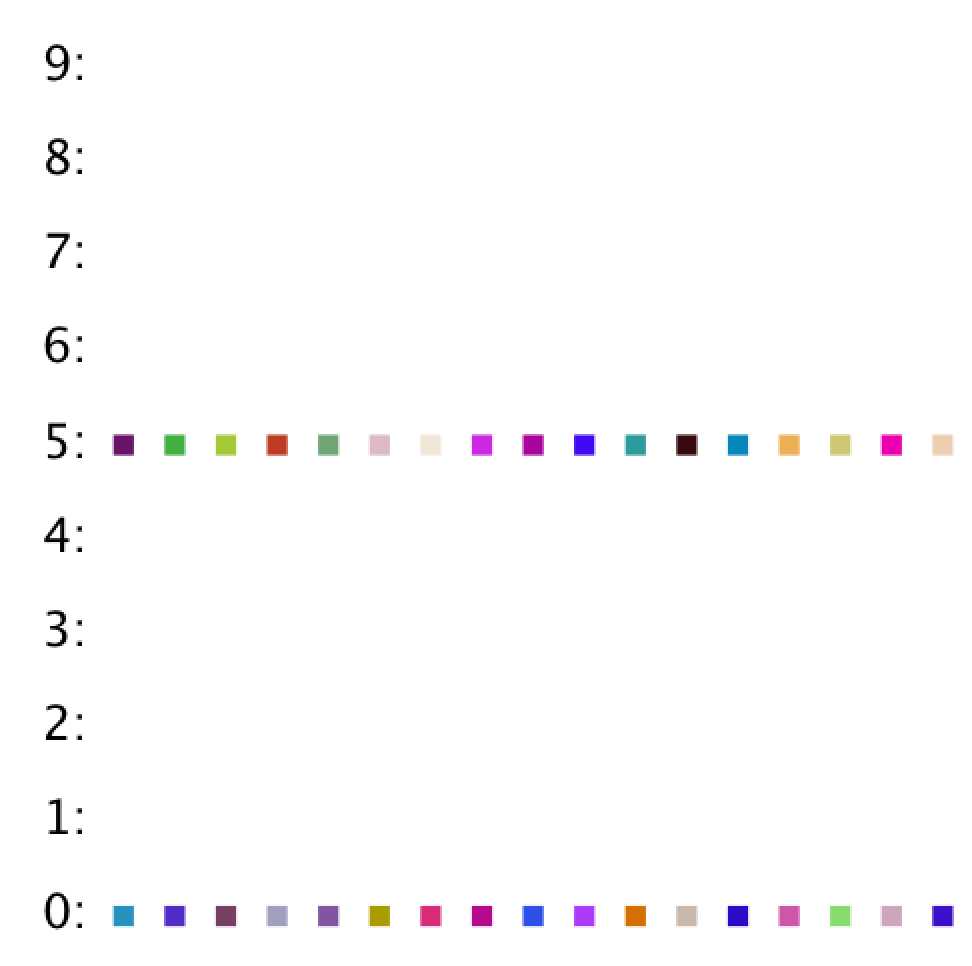

Getting the Skeleton Files
As usual, run git pull skeleton master to get the skeleton files.
Introduction
In this lightweight HW, we’ll work to better our understanding of hash tables. Given that we have a midterm the day after this homework is due, we’ve tried to keep this homework very short and to the point. Make sure you’re spending your extra time going through study guides, preferably by working through problems with other students in the class!
Simple Oomage
Your goal in this part of the assignment will be to write an equals and hashCode method for the SimpleOomage class, as well as tests for the hashCode method in the TestSimpleOomage class.
To get started on this assignment, open up the class SimpleOomage and take a quick look around. A SimpleOomage has three properties: red, green, and blue, and each may have any value that is a multiple of 5 between 0 and 255. For example, a SimpleOomage with red=35, green=90, and blue=215 would be valid, since all of these are multiples of 5 between 0 and 255. Try running SimpleOomage and you’ll see four random Oomages drawn to the screen.
equals
Start by running TestSimpleOomage. You’ll see that you fail the testEquals test. The problem is that two SimpleOomage objects are not considered equal, even if they have the same red, green, and blue values. This is because SimpleOomage is using the default equals method, which simply checks to see if the the ooA and ooA2 references point to the same memory location.
Your first task for this homework is to write an equals method.
As mentioned in class, writing a proper equals method is a little tricker than it might sound at first blush. According to the Java language specification, your equals method should have the following properties to be in compliance:
- Reflexive:
x.equals(x)must be true for any non-nullx. - Symmetric:
x.equals(y)must be the same asy.equals(x)for any non-nullxandy. - Transitive: if
x.equals(y)andy.equals(z), thenx.equals(z)for any non-nullx,y, andz. - Consistent:
x.equals(y)must return the same result if called multiple times, so long as the object referenced byxandydo not change. - Not-equal-to-null:
x.equals(null)should be false for any non-nullx.
One particularly vexing issue is that the argument passed to the equals method is of type Object, not of type SimpleOomage, so you will need to do a cast. However, doing a cast without verifying that the Object is a SimpleOomage wont’ work, because you don’t want your code to crash if someone calls .equals with an argument that is not a SimpleOomage. Thus, we’ll need to use a new method of the Object class called getClass. For an example of a correct implementation of equals, see http://algs4.cs.princeton.edu/12oop/Date.java.html.
Override the equals method so that it works properly. Make sure to test your equals method by running the test again. After fixing equals, your code should now pass the test.
A Simple hashCode
In Java, it is critically important that if you override equals that you also override hashCode. Uncomment the testHashCodeAndEqualsConsistency method in TestSimpleOomage. Run it, and you’ll see that it fails. The reason is that we’ve overridden equals but not hashCode.
To understand more deeply why this failure occurs, consider the code shown below.
Two questions to ponder when reading this code:
- What should each print statement output?
-
What will each print statement output?
public void testHashCodeAndEqualsConsistency() { SimpleOomage ooA = new SimpleOomage(5, 10, 20); SimpleOomage ooA2 = new SimpleOomage(5, 10, 20); System.out.println(ooA.equals(ooA2)); HashSet<SimpleOomage> hashSet = new HashSet<SimpleOomage>(); hashSet.add(ooA); System.out.println(hashSet.contains(ooA2)); }
Answers:
- The first print statement should and will output true, according to the definition of
equalsthat we created in the previous part of the assignment. - The final print statement should output true. The HashSet does contain a
SimpleOomagewith r/g/b values of 5/10/20! - The final print statement will print false. When the HashSet checks to see if
ooA2is there, it will first computeooA2.hashCode, which for our code will be the defaulthashCode(), which is just the memory address. SinceooAandooA2have different addresses, their hashCodes will be different, and thus the HashSet will be unable to find anOomagewith r/g/b value of 5/10/20 in that bucket.
The Java specification for equals mentions this danger as well: “Note that it is generally necessary to override the hashCodemethod whenever the equals method is overridden, so as to maintain the general contract for the hashCode method, which states that equal objects must have equal hash codes.”
Uncomment the given hashCode method in SimpleOomage, which will return a hashCode equal to red + green + blue. Note that this hashCode is now consistent with equals, so you should now pass all of the TestSimpleOomage tests.
testHashCodePerfect
While the given hashCode method is okay, in the sense that it is consistent with equals and thus will pass testHashCodeAndEqualsConsistency, it is only using a tiny fraction of the possible space of hash codes, meaning it will have many unnecessary collisions.
Our next goal for the SimpleOomage class will be to write a perfect hashCode function. By perfect, we mean that two SimpleOomages may only have the same hashCode only if they have the exact same red, green, and blue values.
…but before we write it, fill in the testHashCodePerfect of TestSimpleOomage with code that tests to see if the hashCode function is perfect. Hint: Try out every possible combination of red, green, and blue values and ensure that you never see the same value more than once. Feel free to use any data structure you want.
Run this test and it should fail, since the provided hashCode method is not perfect.
A Perfect hashCode
To make the hashCode perfect, set the USE_PERFECT_HASH variable to true in SimpleOomage and in your hashCode() method, replace return 0 with a new hash code calculation that is perfect. Finally, run TestSimpleOomage and verify that your perfect hashCode method passes your test. Your TestSimpleOomage test might take a few seconds to complete execution.
Evaluating the perfect hashCode in JUnit
Fill in the haveNiceHashCodeSpread(List<Oomage> oomages, int M) method in the OomageTestUtility method so that it returns true if the given Oomages would have a nice spread if thrown into M buckets using their hashCodes. We define a nice spread as:
- No bucket has fewer than N / 50 oomages.
- No bucket has more than N / 2.5 oomages. , where N is the number of oomages.
In other words, the number of oomages per bucket has to be within the range (N / 50, N / 2.5).
For the purposes of converting an Oomage’s hashCode to a bucket number, you should compute bucketNum = (o.hashCode() & 0x7FFFFFFF) % M, where o is an Oomage. You should not use Math.abs or Math.floorMod. See the FAQ for why.
Once you’ve written this method, try running TestJankyOomage and it should fail. Try running TestNiceSpreadOomage and it should pass.
Now uncomment testRandomOomagesHashCodeSpread in TestSimpleOomage and make sure USE_PERFECT_HASH is true in your SimpleOomage class. Most likely, your hash code will fail this test, even though it is perfect. To understand why, let’s turn to visualiation. If by some chance your hash code passes, that’s fine, you should still use the visualizer to see how your hashCode performs visually in the next section.
Evaluating the perfect hashCode Visually
To get a better understanding of how hash tables work, we will use a hash table visualizer. Specifically, we’ve provided a method with the signature visualize(List<Oomage> oomages, int M, double scale) that shows the distribution of the given oomages across the M buckets according to their hashcodes (and scale is a special parameter that controls the size of some aspects of the drawing).
To try it out, try running the HashTableVisualizer provided. Your visualization will probably look like this (if your hash code fails the testRandomOomagesHashCodeSpread test from the previous section):

Or if your hash code is already good enough that everything spreads out nicely, it’ll look like this:

If you’re getting a figure similar the first where everything is in two buckets, here’s why: Even though your hashCode is perfect, it’s always returning a multiple of 5. Try changing M to 9 in HashTableVisualizer, and you should see a nice spread of values. Understanding why this is happening is a great idea.
If you’d like to make your hashCodes work well for any number of buckets, you should ensure that it is not always a multiple of any number. One way to do this is to divide the red, green, and blue values by 5 before computing the hash code.
Experiment With the Visualizer (Optional)
Once you’ve got a nice spread, try out the visualizer with scale = 0.5, N = 2000, M = 100.
Try messing around with N and M and see how the visualizer behaves on your SimpleOomage class. If there isn’t enough room to fit everything on screen, try resetting the scaling factor to a number less than one. Compare the distribution of items for the perfect vs. imperfect vs. default hashCodes. Does what you see match what you expect?
Complex Oomage
The ComplexOomage class is a more sophisticated beast. Instead of three instance variables representing red, green, and blue values, each ComplexOomage has an entire a list of ints between 0 and 255 (not necessarily multiples of 5). This list may be of any length.
This time, you won’t change the ComplexOomage class at all. Instead, your job will be to write tests to find the flaw in the hashCode function.
Evaluating the ComplexOomage hashCode
The provided hashCode is valid, but it does a potentially bad job of distributing items in a hash table.
Start by visualizing the spread of random ComplexOomage objects using the visualizer. Use the randomComplexOomage method to generate random ComplexOomages. You should find that this visual test shows no apparent problem in the distribution of randomComplexOomages.
Also try uncommenting testRandomOomagesHashCodeSpread in TestComplexOomage. You’ll see that it passes testRandomOomagesHashCodeSpread just fine, reinforcing what you just saw in the visualizer. For totally random ComplexOomages, everything is fine.
testWithDeadlyParams and binary representations
In this case, we need to look at the hashCode to find the problem. Fill in the test testWithDeadlyParams such that the provided hashCode function fails due to poor distribution of ComplexOomage objects.
Given what we’ve learned in 61B so far, this is a really tricky problem! Consider how Java represents integers in binary (see lecture 23 for a review). For a hint, see Hint.java.
Your test should not fail due to an IllegalArgumentException.
Once you’ve written this test and ComplexOomage fails it, you’re done with HW3!
Fix the hashCode (optional)
Consider how you might change the hashCode method of ComplexOomage so that testWithDeadlyParams passes. Are there other deadly parameters that might strike your hashCode method?
Submission
To give you some small amount of flexibility in the problems you want to focus on, we’ve set up the AG to give you full credit so long as you pass all but one test. Thus if you’re having trouble with any particular part of the HW, feel free to skip it at no penalty.
FAQ
I’m failing the HashTableVisualizer test!
You must convert from hashCode to bucket number using (hashCode & 0x7FFFFFFF) % M. You should not use Math.abs(hashCode) % M.
Why can’t I just use Math.abs or Math.floorMod?
Math.abs is bad because of what happens if you do Math.abs(-2147483648). Try it out. Math.floorMod is fine, but we wanted to give you a chance to see how the optional algorithms textbook does things, and also give you an example of a bitwise operation (0x7FFFFFFF), we’ll talk about these much later in the course towards the very end.
What does k & 0x7FFFFFFF do?
It returns an integer equal to k, but with the top bit set to zero. We’ll talk more about this at the very end of class.
I’m getting errors like file does not contain class hw3.hash.HashTableVisualizer in the autograder.
Your code must be part of the hw3.hash package, with the appropriate declaration at the top of the file.